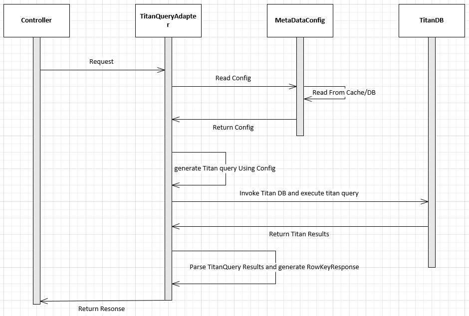

Titan Query Adapter
Abstract
TitanQueryAdapter can be used to connect to the Titan graph data base in order to get the rowkey(s) or vid(s) based on the traversal. This Adapter will return the list of RowKeys based on the titan query. The HBase Data Load component then can use the rowkey(s) to query HBase to get the actual entity details and to populate in service response.
Overview
- The
titan_querysection needs to be added in the JSON Configuration. - TitanQueryAdapter reads the configuration and generates the query.-
- TitanQueryAdapter will execute dynamically generated query and return the RowKeys for each table
Supported Features
| Feature Name | Sub Feature name |
|---|---|
| Titan Functions |
|
| Multiple Scenarios | NA |
| Index Query |
|
| Wild Char Search |
|
| Exception Handling | NA |
Request Details
| Request Parameter | Request Type | Request Fields |
|---|---|---|
| apiFrameworkRequest | EOSAPIFrameworkRequest |
|
Response Details
| Response Parameter | Response Type | Response Fields |
|---|---|---|
| apiFrameworkResponse | EOSAPIFrameworkResponse |
|
Pre requisites(Entry Condition)
- Request parameters needs to be validated and converted to RequestParamMap
before calling TitanQueryAdapter - RSQL string should be validated and converted to RequestParamMap
before calling TitanQueryAdapter - Scenario name should be passed to TitanQueryAdapter. This is main key to pick the Titan query map from the configuration
TitanQueryAdapter Sequance diagram

Basic Structure
- Below is the sample configuration for simple titan query
1 2 3 4 5 6 7 8 9 10 11 12 13 14 15 16 17 18 19 20 21 22 23 24 25 26 27 28 29 30 31 | "Titan": { "request": { "default": [ { "query": { "queryName": "claimPayment", "claimPayment": [ { "ops": "has", "attr": "Claim_Number", "value": "#claimNumber#" }, { "ops": "hasLabel", "value": "Claim" }, { "ops": "out", "attr": "has_a_Payment" }, { "ops": "valueMap", "attr": "vid" } ] }, "response": {} } ] } } |
Complex example (Skip if not required)
1 2 3 4 5 6 7 8 9 10 11 12 13 14 15 16 17 18 19 20 21 22 23 24 25 26 27 28 29 30 31 32 33 34 35 36 37 38 39 40 41 42 43 44 45 46 47 48 49 50 51 52 53 54 55 56 57 58 59 60 61 62 63 64 65 66 67 68 69 70 71 72 73 74 | "tian_query": { "request": { "selectQuery": [ { "query": { "queryName": "absenceRequest", "absenceRequest": [ { "ops": "hasLabel", "attr": "AbsenceRequest" }, { "ops": "has", "attr": "Absence_Number_Code", "value": "#claimNumber#" }, { "ops": "as", "attr": "AbsenceRequest" }, { "ops": "in", "attr": "has_a_AbsenceRequest" }, { "ops": "as", "attr": "Member" }, { "ops": "out", "attr": "has_Contact" }, { "ops": "as", "attr": "ContactMethod" }, { "ops": "select", "attr": "Member" }, { "ops": "in", "attr": "has_a_Member" }, { "ops": "hasLabel", "attr": "GroupCustomer" }, { "ops": "out", "attr": "is_another" }, { "ops": "as", "attr": "Customer" }, { "ops": "select", "attr": "AbsenceRequest,Member,ContactMethod,Customer" }, { "ops": "by", "attr": "vid" }, { "ops": "dedup" } ] }, "response": {} } ] } } |
- Below is the sample code snippet to invoke titanQueryAdapter from controller/business deligater.
1 2 3 4 | EOSAPIFrameworkResponse eosapiFrameworkResponse = eosAPIFramework.titanQueryAdapter .getTitanRowKeys(eosapiFrameworkRequest, (Map)jsonConfig.get("Titan")); |
- TitanQueryAdapter read the configuration from cache/DB using the config map .
- TitanQueryAdapter will convert the configuration(above) into Titan query using Gramlin api.
- TitanQueryAdapter will read the dynamic values( input query parameters ) from the EOSAPIFrameworkRequest.requestParamMap
- When ever TitanQueryAdapter encounters #<value# then it will read the corresponding value from the EOSAPIFrameworkRequest.requestParamMap.
1 2 | titanConnection.getGraph().traversal().V().has("Claim_Number",#claimNumber#) .hasLabel("Claim").out("has_a_Payment").valueMap("vid"); |
- below is the sample response TitanQueryAdapter will return back for the above titan configuration.
1 2 3 4 5
{ claimPayment=[ -1050846467411942099 ] }
Complex example (Skip if not required)
1 2 3 4 5 6 7 8 9 10 11 12 13 14 15 16 17 18 19 20 21 22 23 24 25 26 27 28 29 30 31 32 33 34 35 36 37 38 39 40 41 42 43 44 45 46 | { absenceRequest=[ { TitanQueryRelationResult=[ { AbsenceRequest=5942163829025099943, Member=-8668377820092427996, ContactMethod=5126035711794990839, Customer=1345563336256692547 }, { AbsenceRequest=5942163829025099943, Member=-8668377820092427996, ContactMethod=7197611608030668910, Customer=1345563336256692547 }, { AbsenceRequest=5942163829025099943, Member=-8668377820092427996, ContactMethod=-8717648880362260307, Customer=1345563336256692547 } ], Customer=[ 1345563336256692547, 1345563336256692547, 1345563336256692547 ], AbsenceRequest=[ 5942163829025099943, 5942163829025099943, 5942163829025099943 ], ContactMethod=[ 5126035711794990839, 7197611608030668910, -8717648880362260307 ], Member=[ -8668377820092427996, -8668377820092427996, -8668377820092427996 ] } ] } |
Titan Operations
has
- This will Filters vertices, edges and vertex properties based on the existence of properties. Below are the atrributes should define in the confguration.
| AttributeName | AttributeValue |
|---|---|
| ops | has |
| attr | Titan vertex attribute name |
| value | Titan vertex attribute value |
Example
1 2 3 4 5 | { "ops": "has", "attr": "Absence_Number_Code", "value": "#claimNumber#" } |
hasLabel
- This will Filters vertices, edges and vertex properties based on their label.This should be included when we need to query on specific vertex ( ex. GroupCustomer,Member) .Below are the atrributes should define in the confguration for hasLabel.
| AttributeName | AttributeValue |
|---|---|
| ops | hasLabel |
| value | Titan vertex label name |
Example
1 2 3 4 | { "ops": "hasLabel", "attr": "AbsenceRequest" } |
valueMap
- This will Map the Element to the values of the associated properties given the provide property keys. Below are the atrributes should define in the confguration for valueMap.
| AttributeName | AttributeValue |
|---|---|
| ops | valueMap |
| attr | Titan vertex attribute name |
Example
1 2 3 4 | { "ops": "valueMap", "attr": "vid" } |
out
- This will Map the Vertex to its outgoing adjacent vertices given the edge labels. Below are the atrributes should define in the confguration for valueMap.
| AttributeName | AttributeValue |
|---|---|
| ops | out |
| attr | Titan vertex attribute name |
Example
1 2 3 4 | { "ops": "out", "attr": "has_a_Payment" } |
in
- This will Map the Vertex to its incoming adjacent vertices given the edge labels. Below are the atrributes should define in the confguration for in.
| AttributeName | AttributeValue |
|---|---|
| ops | in |
| attr | Titan vertex attribute name |
Example
1 2 3 4 | { "ops": "in", "attr": "has_a_Member" } |
select
- This will Map the Traverser to the object specified by the selectKey. Below are the atrributes should define in the confguration for select.
| AttributeName | AttributeValue |
|---|---|
| ops | select |
| attr | Titan vertex label name |
Example
1 2 3 4 | { "ops": "select", "attr": "AbsenceRequest,Member,ContactMethod,Customer" } |
as
- A step modulator that provides a lable to the step that can be accessed later in the traversal by other steps. Below are the atrributes should define in the confguration for as.
| AttributeName | AttributeValue |
|---|---|
| ops | as |
| attr | Unique reference name |
Example
1 2 3 4 | { "ops": "as", "attr": "AbsenceRequest" } |
by
- The by() can be applied to a number of different step to alter their behaviors. Below are the atrributes should define in the confguration for by.
| AttributeName | AttributeValue |
|---|---|
| ops | by |
| attr | Titan vertex attribute name |
Example
1 2 3 4 | { "ops": "by", "attr": "vid" } |
dedup
- This will Remove all duplicates in the traversal stream up to this point. Below are the atrributes should define in the confguration for dedup.
| AttributeName | AttributeValue |
|---|---|
| ops | dedup |
Example
1 2 3 | { "ops": "dedup" } |
order
- This will Order all the objects in the traversal up to this point and then emit them one-by-one in their ordered sequence. Below are the atrributes should define in the confguration for order.
| AttributeName | AttributeValue |
|---|---|
| ops | order |
| attr | Titan vertex attribute name |
Example
1 2 3 4 | { "ops": "order", "attr": "address_effective_date" } |
limit
- This will limit the traversal objects to the limit argument. THis will allow first n objects defined by the limit argument. Below are the atrributes should define in the confguration for limit.
| AttributeName | AttributeValue |
|---|---|
| ops | limit |
| value | number |
Example
1 2 3 4 | { "ops": "limit", "attr": "10" } |
both
- This will Map the Vertex to its adjacent vertices given the edge labels.. Below are the atrributes should define in the confguration for limit.
| AttributeName | AttributeValue |
|---|---|
| ops | both |
| attr | Titan vertex label name |
range
- This will Filter the objects in the traversal by the number of them to pass through the stream. Below are the atrributes should define in the confguration for range.
| AttributeName | AttributeValue |
|---|---|
| ops | range |
| from | number |
| to | number |
Example
1 2 3 4 5 | { "ops": "range", "from": "3", "to": "10" } |